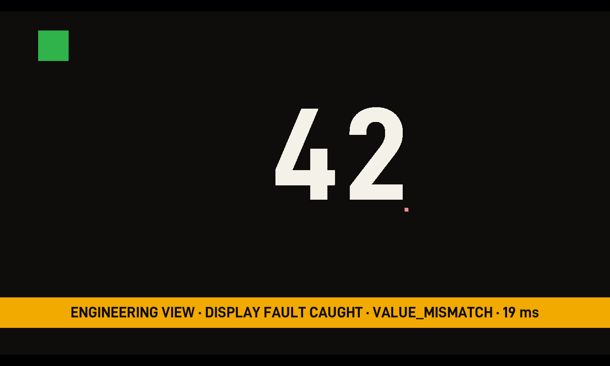

Telltale · runs on QNX 8.0
Monitor off · redrawn
Telltale armed
Two numbers · QEMU (TCG), not hardware
last true frame to truth on the glass, one incident (regression runs: 34.5–54.4)
of 30, wrong with the monitor off (median of 40 runs)
…may fail to display any information…Kia, 2023 Sportage +
…may not illuminate at startup or while driving.Ford, 2024 Mustang
…previously repaired incorrectly…Ford and Lincoln, 2019
blank
frozen: looks fine
Those are blank. A frozen cluster looks fine.
The idea

123How it works
One incident, from the target's own log
DETECT TT-FRZ-0001 TICK_STALL shown=48 truth=46 lamps_shown=0x01 lamps_truth=0x00 caught_ms=20.3 SAFE verified on glass TT-FRZ-0001 (33.0 ms after detect, composed check) SIGKILL renderer pid 34119714 (hung) RESTARTING -> NORMAL
ms from the last true frame · bar to scale
Every 20 ms, against the cluster's own glyph atlas.
screen_read_display/dev/vehicledevctl · ionotify22/22 checksSCHED_FIFO 60The bench · QEMU TCG
Honest by design
The ask
Read the code, the evidence and the codelab. Every bench figure regenerates from the committed CSVs.
telltale.edycu.dev